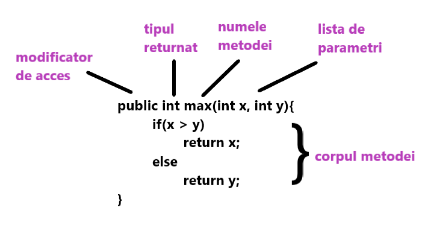

Metode în Java
În general, o meotdă este o modalitate de a efectua anumite sarcini. În mod similar, metoda din Java este o colecție de instrucțiuni care efectuează o sarcină specifică. Oferă reutilizarea codului. De asemenea, putem modifica cu ușurință codul folosind metode. În această secțiune, vom afla ce este o metodă în Java, tipuri de metode, declararea metodei și cum să apelăm o metodă în Java.
Ce este o metodă in Java?
O metodă este un bloc de cod sau o colecție de instrucțiuni sau un set de cod grupat împreună pentru a efectua o anumită sarcină sau operație. Este folosit pentru a realiza reutilizarea codului. Scriem o metodă o dată și o folosim de multe ori. Nu este necesar să scriem cod din nou și din nou. De asemenea, oferă modificarea ușoară și lizibilitatea codului, doar prin adăugarea sau eliminarea unei bucăți de cod. Metoda este executată numai atunci când o apelăm sau o invocăm.
Cea mai importantă metodă în Java este metoda main().
Declararea unei metode
Declarația metodei oferă informații despre atributele metodei, cum ar fi vizibilitatea, tipul de returnare, numele și argumentele. Are șase componente care sunt cunoscute sub numele de antet de metodă, așa cum am arătat în figura următoare.

Signatura metodei: Fiecare metodă are o semnătură de metodă. Este o parte a declarației metodei. Include numele metodei și lista de parametri.
Modificatorii de acces: Specificatorul de acces sau modificatorul este tipul de acces al metodei. Specifică vizibilitatea metodei. Java oferă patru tipuri de identificator de acces:
- public: metoda este accesibilă pentru toate clasele atunci când folosim specificatorul public în aplicația noastră.
- private: când folosim un identificator de acces privat, metoda este accesibilă doar în clasele în care este definită.
- protected: când folosim un identificator de acces protejat, metoda este accesibilă în cadrul aceluiași pachet sau subclase dintr-un pachet diferit.
- (default)-fără moodificator: când nu folosim niciun specificator de acces în declarația metodei, Java folosește implicit un identificator de acces implicit. Este vizibil numai din același pachet.
Tipul returnat: Tipul returnat este un tip de date pe care îl returnează metoda. Poate avea un tip de date primitiv, obiect, colecție, gol, etc. Dacă metoda nu returnează nimic, vom folosi cuvântul cheie gol.
Numele metodei: este un nume unic care este folosit pentru a defini numele unei metode. Trebuie să corespundă funcționalității metodei. Să presupunem că, dacă creăm o metodă pentru scăderea a două numere, numele metodei trebuie să fie scade(). O metodă este invocată prin numele său.
Corpul metodei: Este o parte a declarației metodei. Conține toate acțiunile care trebuie efectuate. Este închisă în perechea de acolade.
Apelarea unei metode
Odată ce am definit o metodă, aceasta ar trebui numită. Apelarea unei metode într-un program este simplă. Când apelăm sau invocăm o metodă definită de utilizator, controlul programului se transferă la metoda apelată.
NumarPar.java
import java.util.Scanner;
public class NumarPar{
//metoda definita
void numarPar(int n){
//corpul metodei
if (num % 2 == 0){
System.out.println(n + "este
par");
else
System.out.println(n + "NU
este par");
}
public static void main(String args[]){
//cream un obiect de tipul Scanner
Scanner scan = new
Scanner(System.in);
//citim valoarea de la user
System.out.print("Introduceti un numar:
");
int n = scan.nextInt();
//apelarea metodei
numarPar(n);
}
}
Afișare:
Introduceti un numar: 12
12 este par
Metoda instanței
Metoda clasei este cunoscută ca o metodă de instanță. Este o metodă nestatică definită în clasă. Înainte de a apela sau invoca metoda instanței, este necesar să creați un obiect din clasa sa. Să vedem un exemplu de metodă de instanță.
Suma.java
import java.util.Scanner;
public class Suma{
//metoda definita
void suma(int n1, int n2){
//corpul metodei
int s;
s = n1 + n2;
//returnarea sumei
return s;
}
public static void main(String args[]){
//creare obiect al unei clase
Suma obj = new Suma();
//apelare metoda instantei
System.out.println("Suma lui a si b este:
"+obj.add(12,13));
}
}
Afișare:
Suma lui a si b este: 25